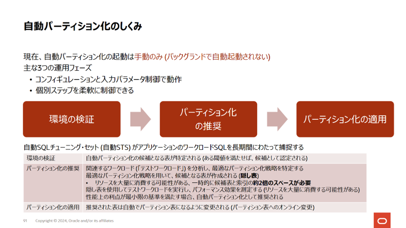
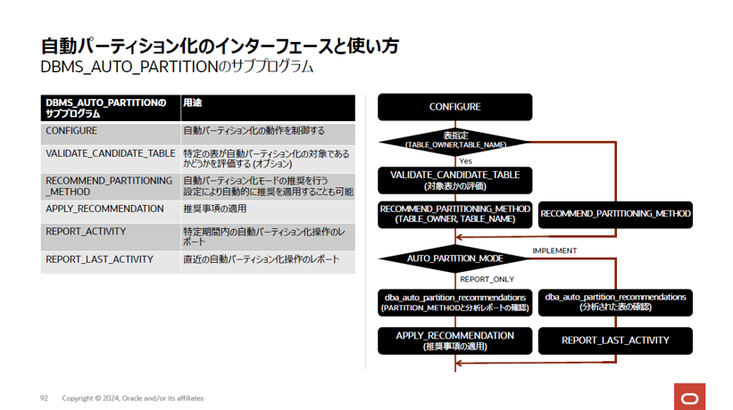
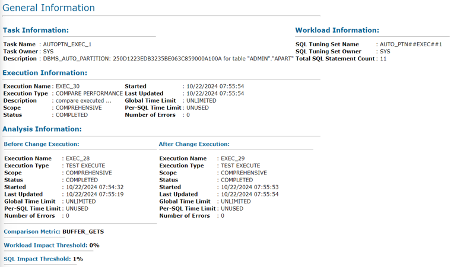
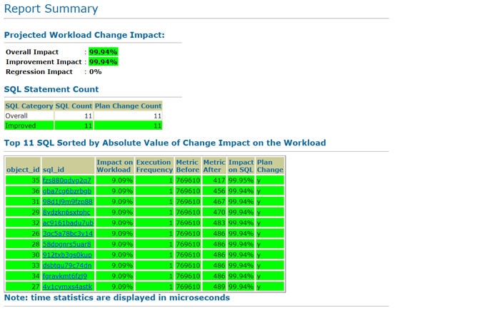
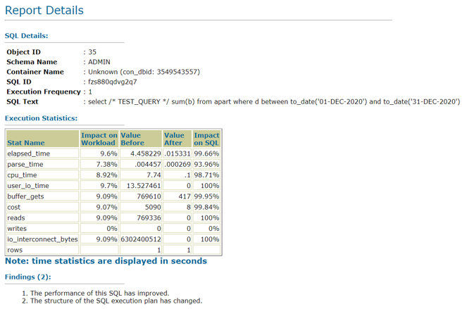
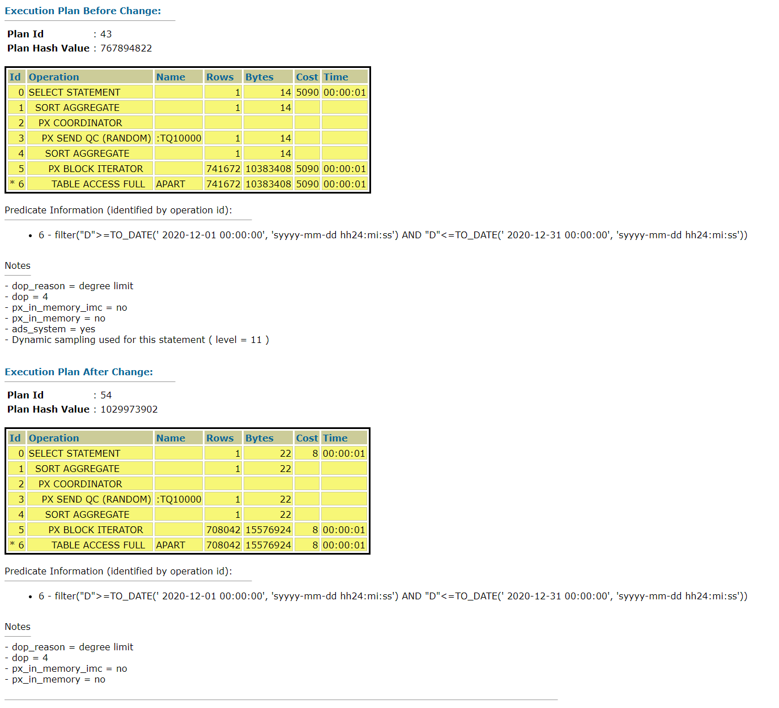

はじめに
自動パーティション化は、Autonomous Databaseで提供されている自動的に表や索引をパーティション化することができる機能です。 APIとしてDBMS_AUTO_PARTITIONパッケージが提供されており、3つの運用フェーズを手動で実行します。


本チュートリアルでは、非パーティション表を作成し、それを対象に自動パーティション化を実行します。
前提条件 :
- バージョンが19cのAutonomous Databaseインスタンスが構成済みであること
ADBインタンスの作成方法については、「101:ADBインスタンスを作成してみよう」 を参照ください。 - Always FreeまたはDeveloper ADBインスタンスを利用すること
自動パーティション化の対象は表のサイズがAlways Free/DeveloperADBインスタンスでは5GB以上、商用ADBインスタンスでは64GB以上である必要があります。商用ADBインスタンスの場合は5GBを64GBに置き換えてください。 - SQLコマンドを実行するユーザー・インタフェースはSQL*Plusを利用すること
環境は、「204:開発者向け仮想マシンのセットアップ方法」 で作成できます。また、ADBへの接続方法は 「104: クレデンシャル・ウォレットを利用して接続してみよう」 を参照ください。 - ユーザーはADMINユーザーで実行すること
Autonomous Databaseへの接続文字列は「atpdev01_medium」、各ユーザのパスワードはすべて「Welcome12345#」とします。
所要時間 : 約30分（Developerインスタンスの場合）
1. 環境の準備
まず、本チュートリアルで使用するAlways FreeインスタンスまたはDeveloperインスタンスを作成します。構成は以下のとおりです。
- 表示名 : ATPDEV01
- データベース名 : ATPDEV01
- ワークロード・タイプ : トランザクション処理
- デプロイメント・タイプ : サーバーレス
- Always Freeの構成オプションのみを表示また開発者のどちらか：オン
- データベース・バージョンの選択 : 19c
- 管理者資格証明の作成 : Welcome12345#
- ネットワーク・アクセスの選択 : 任意
2. 非パーティション表の作成
自動パーティショション化の対象となるサンプル表APARTを作成します。ADMINユーザーで接続し、次のスクリプトを実行します。
sqlplus admin/Welcome12345#@atpdev01_medium
-- 既存のAPART表があれば削除
drop table APART purge;
-- APART表の作成
create table apart (
a number(10),
b number(10),
c number(10),
d date,
pad varchar2(1000));
-- データを作成
insert /*+ APPEND */ into apart
with
r as ( select /*+ materialize */ dbms_random.string('x',500) str
from dual connect by level <= 2000 ),
d as ( select /*+ materialize */ to_date('01-JAN-2020') + mod(rownum,365) dte
from dual connect by level <= 2500 ),
m as ( select 1
from dual connect by level <= 2 )
select /*+ leading(m d r) use_nl(d r) */
rownum, rownum, rownum, dte, str
from m,d,r;
-- commit
commit;
実行後サイズを確認します。サイズは5GB以上である必要があります。
-- サイズの確認
select sum(bytes)/(1024*1024) size_in_megabytes from user_segments where segment_name = 'APART';
結果は以下でした。5GB以上であることが確認できました。
SQL> select sum(bytes)/(1024*1024) size_in_megabytes from user_segments where segment_name = 'APART';
SIZE_IN_MEGABYTES
-----------------
6020.0625
Note:
スクリプトの以下の部分の数値を大きくすると作成される表のサイズが大きくなります。後の操作で一時的に1.5倍程度領域を必要になることに注意して、必要に応じて適切なサイズになるよう調整してください。
※Always Free/Developerインスタンスはストレージの上限が20GBです。from dual connect by level <= 2
3. 自動パーティション化の対象になるかを検証
作成したAPART表が自動パーティション化の対象になるかを検証します。検証に合格するためにはこちらのドキュメントに記載されている条件を満たす必要があります。
検証にはDBMS_AUTO_PARTITIONパッケージのVALIDATE_CANDICATE_TABLEファンクションを利用します。
set serveroutput on
declare
ret varchar2(1000);
begin
ret := dbms_auto_partition.validate_candidate_table (table_owner=>user,table_name=>'APART');
dbms_output.put_line(' ');
dbms_output.put_line(' ');
dbms_output.put_line('Auto partitioning validation: ' || ret);
end;
/
結果は次のとおりです。
まだワークロードを実行していないので、SQLチューニングセットの情報がなく（5つ以上のクエリが必要）INVALIDになりました。
Auto partitioning validation: INVALID: table is referenced by 0 full table scan
queries in the SQL tuning set; 5 queries required
PL/SQL procedure successfully completed.
ワークロードはこれから実行するので問題ありませんが、サイズが不足している場合や統計情報が不備の場合も以下のようにINVALIDとなります。
その場合はサイズの調整を行う、統計情報の取得を行うまたは自動取得されるまで待機します。
- サイズが不足している場合のメッセージ
Auto partitioning validation: INVALID: table is too small (0 GB actual, 5 GB required)
PL/SQL procedure successfully completed.
- 統計情報が不足している場合のメッセージ
Auto partitioning validation: INVALID: table statistics are stale
PL/SQL procedure successfully completed.
4. ワークロードの実行
作成したAPART表にワークロードを実行します。以下のSQLを実行します。
select /* TEST_QUERY */ sum(a) from apart where d between to_date('01-MAR-2020') and to_date('05-mar-2020');
select /* TEST_QUERY */ sum(a) from apart where d = to_date('01-MAR-2020');
select /* TEST_QUERY */ sum(b) from apart where d between to_date('01-JAN-2020') and to_date('05-JAN-2020');
select /* TEST_QUERY */ sum(c) from apart where d between to_date('01-APR-2020') and to_date('05-APR-2020');
select /* TEST_QUERY */ sum(a) from apart where d between to_date('01-JUN-2020') and to_date('02-JUN-2020');
select /* TEST_QUERY */ sum(b) from apart where d between to_date('01-DEC-2020') and to_date('31-DEC-2020');
select /* TEST_QUERY */ sum(a) from apart where d between to_date('01-AUG-2020') and to_date('31-AUG-2020');
select /* TEST_QUERY */ sum(b) from apart where d between to_date('01-OCT-2020') and to_date('01-OCT-2020');
select /* TEST_QUERY */ sum(c) from apart where d between to_date('01-FEB-2020') and to_date('05-FEB-2020');
select /* TEST_QUERY */ sum(a) from apart where d between to_date('01-MAY-2020') and to_date('02-MAY-2020');
select /* TEST_QUERY */ avg(a) from apart where d between to_date('01-JUL-2020') and to_date('02-JUL-2020');
Autonomous Databaseでは15分毎に定期的にワークロード情報をキャプチャするタスクが動作します。 実行したワークロードの情報が取得されたかどうかを最後に動作したタスクの時刻で確認します。
set line 200
col task_name for a30
col last_schedule_time for a40
-- 現在の時刻を確認(A)
select current_timestamp now from dual;
-- 最後に動作したタスクの時刻を確認(B)：LAST_SCHEDULE_TIMEがAの時刻を過ぎるまで繰り返して確認する
select task_name,
status,
enabled,
interval,
last_schedule_time,
systimestamp-last_schedule_time ago
from dba_autotask_schedule_control
where dbid = sys_context('userenv','con_dbid')
and task_name like '%STS%';
(B)のSQLを実行した結果です。LAST_SCHEDULE_TIME列の値が(A)の時刻を過ぎていればワークロード後にタスクが動作しています。
TASK_NAME STATUS ENABL INTERVAL LAST_SCHEDULE_TIME AGO
------------------------------ ---------- ----- ---------- ---------------------------------------- ---------------------------------------------------------------------------
Auto STS Capture Task SUCCEEDED TRUE 900 18-OCT-24 08.32.13.501 AM +00:00 +000000000 00:01:29.538015
sql
次に自動SQLチューニングセットに実行したワークロードのクエリが存在するか確認します。
クエリのコメント/* TEST_QUERY */を利用してDBA_SQLSET_STATEMENTSビューを検索します。
select sql_text
from dba_sqlset_statements
where sql_text like '%TEST_QUERY%'
and sqlset_name = 'SYS_AUTO_STS';
以下のようにSQL_TEXT列で実行したクエリを確認できればOKです。
SQL_TEXT
--------------------------------------------------------------------------------
select /* TEST_QUERY */ sum(a) from apart where d between to_date('01-JUN-2020
select /* TEST_QUERY */ sum(c) from apart where d between to_date('01-APR-2020
select /* TEST_QUERY */ sum(a) from apart where d between to_date('01-MAR-2020'
select /* TEST_QUERY */ avg(a) from apart where d between to_date('01-JUL-2020
:
11 rows selected.
5. 自動パーティション化の対象になるかを再検証
ワークロード情報が取得されていることを確認できたので、改めて自動パーティション化の対象になるかを検証します。 再度以下のSQLを実行します。
set serveroutput on
declare
ret varchar2(1000);
begin
ret := dbms_auto_partition.validate_candidate_table (table_owner=>user,table_name=>'APART');
dbms_output.put_line(' ');
dbms_output.put_line(' ');
dbms_output.put_line('Auto partitioning validation: ' || ret);
end;
/
結果は次のとおりVALIDとなりました。
Auto partitioning validation: VALID
PL/SQL procedure successfully completed.
6.自動パーティション化の実行
検証が成功したので、自動パーティション化を実行します。
6-1. 自動パーティション化の構成オプションの設定
まず自動パーティション化の構成を設定します。構成にはDBMS_AUTO_PARTITIONパッケージのCONFIGUREプロシージャを使用します。
-- 自動パーティション化の設定を構成
exec dbms_auto_partition.configure('AUTO_PARTITION_MODE','REPORT ONLY');
実行結果はこちらのようになります。
SQL> exec dbms_auto_partition.configure('AUTO_PARTITION_MODE','REPORT ONLY');
PL/SQL procedure successfully completed.
ここでは操作モードを設定するパラメータAUTO_PARTITION_MODEをREPORT_ONLYで設定しています。他の操作モードは以下があります。
- IMPLEMENT : 推奨事項の生成と推奨パーティション方法によるパーティション化を実施する
- REPORT ONLY : 推奨事項の生成のみ（デフォルト）
- OFF : 新しい推奨事項の生成と推奨パーティション方法によるパーティション化実施を無効にする
そのほかのCONFIGUREプロシージャのパラメータはこちらを参照ください。
6-2 パーティション化の推奨事項の生成
次にパーティション化の推奨事項を生成するために、DBMS_AUTO_PARTITIONパッケージのRECOMMENDED_PARTITION_METHODファンクションを実行します。
本チュートリアルでは表を指定してパーティション化をしますが、自動取得されているワークロードを対象にパーティション化対象になる表を検索し推奨事項を生成することも可能です。パラメータの詳細についてはこちらをご参照ください。
set timing on
set serveroutput on
declare
r raw(100);
cursor c1 is
select partition_method, partition_key, report
from dba_auto_partition_recommendations
where recommendation_id = r;
begin
-- 推奨事項の生成
r :=
dbms_auto_partition.recommend_partition_method(
table_owner => 'ADMIN', --対象の表を所有するスキーマ
table_name => 'APART', -- 対象の表の名前
report_type => 'TEXT', -- 生成するレポートの書式
report_section => 'ALL', -- レポートに含めるセクション
report_level => 'ALL'); -- レポートに含める情報のレベル
for c in c1
loop
-- 推奨事項のRECOMMENDATION_ID、PARTITION_KEY、PARTITION_METHOD、PARTITION_KEYを表示
dbms_output.put_line('=============================================');
dbms_output.put_line('ID: '||r);
dbms_output.put_line('Method: '||c.partition_method);
dbms_output.put_line('Key : '||c.partition_key);
dbms_output.put_line('=============================================');
end loop;
end;
/
実行した結果はこちらのようになります。
=============================================
ID: 250D1223EDB3235BE063C859000A100A
Method: LIST(SYS_OP_INTERVAL_HIGH_BOUND("D", INTERVAL '1' MONTH, TIMESTAMP '2020-01-01 00:00:00')) AUTOMATIC
Key : D
=============================================
Elapsed: 00:02:54:63
RECOMMENDATION_IDと、パーティション方法はLIST AUTOMATIC、PARTITION_KEYはD列という推奨事項が生成されたことがわかります。
RECOMMENDATION_IDは、あとで推奨事項を実装するときに使用します。
Note:
自動パーティション化では単一レベルのパーティション化と組み合わせた単一列のパーティション・キーが使用されます。また、推奨されるパーティション方法は以下からとなります。複数列パーティションやコンポジット・パーティションは含まれません。
- AUTOMATIC INTERVAL
- LIST AUTOMATIC
- HASH
7. 推奨事項の確認
生成された推奨事項は都度、データベースに保存され、DBA_AUTO_PARTITION_RECOMMENDATIONSビューで確認することができます。
7-1 推奨事項の表示
例えば、以下のスクリプトを実行すると最新の推奨事項のパーティション方法とパーティション・キーを表示させることができます。
set linesize 180
column partition_method format a100
column partition_key format a13
-- 最新の推奨事項のRECOMMENDATION_IDとパーティション方法とパーティション・キーを表示
select recommendation_id,partition_method,partition_key
from dba_auto_partition_recommendations
where generate_timestamp =
(select max(generate_timestamp)
from dba_auto_partition_recommendations);
結果は次のように表示されます。
RECOMMENDATION_ID PARTITION_METHOD PARTITION_KEY
-------------------------------- ---------------------------------------------------------------------------------------------------- -------------
250D1223EDB3235BE063C859000A100A LIST(SYS_OP_INTERVAL_HIGH_BOUND("D", INTERVAL '1' MONTH, TIMESTAMP '2020-01-01 00:00:00')) AUTOMATIC D
7-2 推奨事項レポートのファイル出力
またDBMS_AUTO_PARTITIONパッケージのREPORT_ACTIVITYファンクションとREPORT_LAST_ACTIVITYファンクションを利用すると、期間や形式を選択してレポートをファイル出力することができます。指定できるパラメータについてはこちらをご参照ください。
例えば、次のSQLは最新の推奨事項のレポートを出力します。
set trimspool on
set trim on
set pages 0
set linesize 1000
set long 1000000
set longchunksize 1000000
set heading off
set feedback off
-- spool <ファイル名>で結果をautoPartitionFInding.htmlに出力
spool autoPartitionFinding.html
-- HTML書式で出力するように指定。レポートのセクションや情報レベルの明示的な指定も別パラメータにより可能
select dbms_auto_partition.report_last_activity(type=>'HTML') from dual;
exit;
上記で出力されたファイルをブラウザで確認してみます。
レポートの構成は次の通りです。レポートのセクションや情報レベルを明示的に指定しなかったため、デフォルト(セクション=ALL、レベル=TYPICAL)での出力となっています。
-
General Information：パーティション化分析で実施したパフォーマンス評価テストの情報

-
Report Summary：パーティション化によるワークロードに対するパフォーマンス影響のサマリ

-
Report Details：ワークロードの各SQLでパーティション化前後を比較したパフォーマンス情報

Report Detailsでは、各SQLのパーティション化前後の実行計画も確認することができます。

7-3 推奨事項の実装で適用されるDDLの確認
生成された推奨事項の実装で適用されるDDLもDBA_AUTO_PARTITION_RECOMMENDATIONビューで確認することができます。確認したDDLは推奨事項の生成を行ったデータベースとは別のデータベースに推奨を適用する場合に利用します。 以下のSQLを実行します。
set long 100000
set pages 0
select modify_table_ddl
from dba_auto_partition_recommendations
where generate_timestamp =
(select max(generate_timestamp)
from dba_auto_partition_recommendations)
order by recommendation_seq;
次のような結果を得ることができます。
MODIFY_TABLE_DDL
--------------------------------------------------------------------------------
begin
-- DBMS_AUTO_PARTITION recommendation_ID '250D1223EDB3235BE063C859000A100A'
-- for table "ADMIN"."APART"
-- generated at 10/22/2024 07:55:19
dbms_auto_partition.begin_apply(expected_number_of_partitions => 13);
execute immediate
'alter table "ADMIN"."APART"
modify partition by
LIST(SYS_OP_INTERVAL_HIGH_BOUND("D", INTERVAL ''1'' MONTH, TIMESTAMP ''2020-01-0
1 00:00:00'')) AUTOMATIC (PARTITION P_NULL VALUES(NULL))
auto online parallel';
dbms_auto_partition.end_apply;
exception when others then
dbms_auto_partition.end_apply;
raise;
end;
8. 推奨事項の適用
推奨されたパーティション化はRECOMMENDATION_IDを指定してDBMS_AUTO_PARTITIONパッケージのAPPLY_RECOMMENDATIONプロシージャで適用することができます。
set timing on
-- RECOMMENDATION_IDを引数に設定
exec dbms_auto_partition.apply_recommendation('250D1223EDB3235BE063C859000A100A');
RECOMMENDATION_IDは“6-2 パーティション化の推奨事項の生成”で使用したRECOMMEND_PARTITION_METHODファンクションの戻り値です。“7-1 推奨事項の表示”のようにDBA_AUTO_PARTITION_RECOMMENDATIONSビューで確認することができます。
実行結果はこちらのようになります。
SQL> set timing on
SQL> exec dbms_auto_partition.apply_recommendation('250D1223EDB3235BE063C859000A100A');
PL/SQL procedure successfully completed.
Elapsed: 00:00:44.91
Note:
推奨事項の適用はオフピーク時/閑散期に実行することを推奨しています。パーティション化によるCPUやIOリソースの使用や、対象の表に行われているDML操作に応じて、表のサイズに1.5倍程度の空き領域が必要とされるためです。
APART表がパーティション化されているどうかを次のSQLで確認します。
set trims on
set linesize 200
set pages 40
column table_name format a20
column column_name for a30
column apply_timestamp_start for a30
column apply_timestamp_end for a30
column partition_name format a20
column segment_name format a15
-- dba_part_tablesのauto列：自動パーティション化によるパーティション化を判別するための列
select t.auto,t.partitioning_type,c.column_name
from dba_part_tables t, dba_part_key_columns c
where t.owner='ADMIN' and t.table_name='APART'
and t.owner=c.owner and t.table_name=c.name;
-- USER_SEGMENTSビューでパーティション名とタイプ、サイズを確認
select segment_name,
partition_name,
segment_type,
bytes/(1024*1024) mb
from user_segments
where segment_name='APART'
order by partition_name;
-- パーティション化された日時を確認
select apply_timestamp_start,apply_timestamp_end
from dba_auto_partition_recommendations
where table_owner='ADMIN' and table_name='APART';
実行結果は次のとおりです。APART表が13個のパーティションでパーティション化されていることが確認できました。
SQL> select t.auto,t.partitioning_type,c.column_name
2 from dba_part_tables t, dba_part_key_columns c
3 where t.owner='ADMIN' and t.table_name='APART'
4 and t.owner=c.owner and t.table_name=c.name;
AUT PARTITION COLUMN_NAME
--- --------- ------------------------------
YES LIST ORA_PART_KEY_FB21B1C06545B8BF
SQL> select segment_name,
2 partition_name,
3 segment_type,
4 bytes/(1024*1024) mb
5 from user_segments
6 where segment_name='APART'
7 order by partition_name;
SEGMENT_NAME PARTITION_NAME SEGMENT_TYPE MB
--------------- -------------------- ------------------ ----------
APART P_NULL TABLE PARTITION .0625
APART SYS_P897 TABLE PARTITION 456
APART SYS_P898 TABLE PARTITION 528
APART SYS_P899 TABLE PARTITION 512
APART SYS_P900 TABLE PARTITION 440
APART SYS_P901 TABLE PARTITION 528
APART SYS_P902 TABLE PARTITION 527
APART SYS_P903 TABLE PARTITION 496
APART SYS_P904 TABLE PARTITION 528
APART SYS_P905 TABLE PARTITION 512
APART SYS_P906 TABLE PARTITION 528
APART SYS_P907 TABLE PARTITION 512
APART SYS_P908 TABLE PARTITION 531
SQL> select apply_timestamp_start,apply_timestamp_end
2 from dba_auto_partition_recommendations
3 where table_owner='ADMIN' and table_name='APART'
APPLY_TIMESTAMP_START APPLY_TIMESTAMP_END
------------------------------ ------------------------------
28-OCT-24 06.03.57.295050 AM 28-OCT-24 06.04.33.073641 AM
おわりに
本チュートリアルでは自動パーティション化という機能をご紹介しました。
ワークロードとスキーマを人が分析しなくても最適なパーティション方法を実装することができます。
なお、実環境を対象にして自動パーティション化を使用するときには本番データベースではなく、クローンなど別のデータベースで自動パーティション化を使用することが推奨となります。パフォーマンス評価で内部に作成した補助表に対しワークロードを実行するため、CPUとIOリソースを大量に利用すること、また領域も一時的に表の1～1.5倍追加で必要となるからです。ご留意ください。
参考資料
-
『Oracle Autonomous Databaseサーバーレスの使用』“Autonomous Databaseでの自動パーティション化の管理”
以上でこの章は終了です。次の章にお進みください。